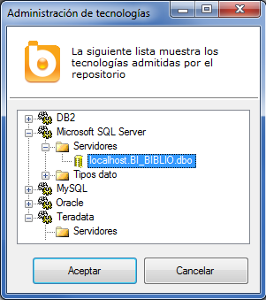
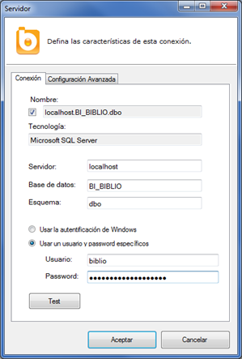
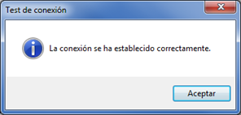

Administración de tecnologías
En el momento de crear un catálogo de Bingo Intelligence debemos indicar el servidor donde se accederá para obtener los datos. Típicamente, la conexión al servidor queda definida mediante el nombre del servidor (o IP), el nombre de la base de datos, y unas credenciales (usuario y password).
Las conexiones a las bases de datos se crean y administran desde el “Administrador de tecnologías”.
Para abrir esta ventana, se debe ir al menú “Herramientas”, y seleccionar la opción “Bases de datos/Administrador de tecnologías”.

En esta ventana las conexiones a los distintos servidores están agrupadas según los distintos gestores de bases de datos (o tecnologías).
A través del menú contextual (botón derecho del ratón), podemos modificar las conexiones existentes o crear nuevas.
Propiedades de conexión
Al abrir las propiedades de un servidor, aparece un formulario desde donde se pueden definir los parámetros de conexión:

Los parámetros que se pueden configurar son:
- Nombre de la conexión: Es un nombre meramente informativo. Si se deja el “check” marcado, se le asigna un nombre automáticamente.
- Servidor: Es el nombre del servidor (o su IP). El servidor de base de datos debe ser accesible desde el servidor Bingo. No es necesario (ni conveniente) que los equipos de los usuarios tengan acceso directo a dicho servidor.
- Base de datos: Es el nombre de la base de datos (o catálogo).
- Esquema: Es el esquema predeterminado de la base de datos. Si las tablas pertenecen a este esquema, Bingo empleará la nomenclatura abreviada de tablas y campos (sin especificar explícitamente el “esquema”).
- Tipo de autentificación: En función de la configuración del gestor de la base de datos, se pueden utilizar las credenciales de Windows o utilizar el método de autentificación propio de cada base de datos. Si se utiliza la autentificación Windows, se emplearán las credenciales de la cuenta de sistema ASP.NET del servidor Bingo.
- Usuario y password: Son las credenciales que se utilizarán para establecer la conexión (en el caso de que no se emplee autentificación Windows).
Haciendo clic en el botón “Test” verificaremos si los parámetros de conexión son correctos. Si el servidor Bingo es capaz de establecer la conexión con el servidor de datos debe aparecer el siguiente mensaje:

Desde la pestaña “Configuración avanzada” podemos ver la cadena de conexión definida.
Tecnologías soportadas
De manera predeterminada, Bingo Intelligence está preparado para conectarse a los gestores de bases de datos más habituales (SQL Server, Oracle, MySQL, etc.). Sin embargo, Bingo Intelligence puede conectarse a prácticamente cualquier base de datos relacional.
Consulte con su comercial o solicite más información sobre sus necesidades particulares en info@bingointelligence.com.